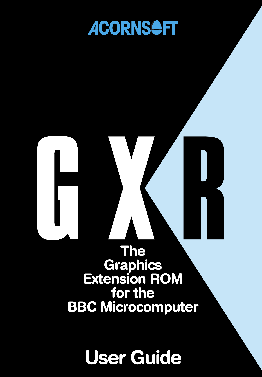

This site contains a highly annotated reassembly of the Graphics Extension ROM by Acornsoft. It can be browsed in HTML form by clicking on the "GXR" link on the left. It can also be downloaded as an assembly language file here:
This source file can be assembled using the Acme assembler to make an image that is byte-for-byte identical with the original ROMs for the BBC B, B+, and the Electron ROM from 2020. See the assembly instructions in Chapter 1.